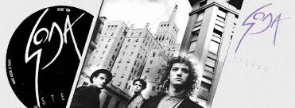
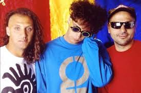
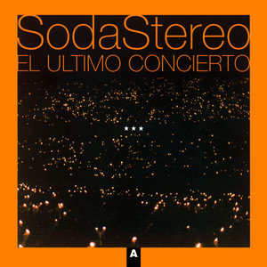

Intro
Soda Stereo fue una banda de rock argentina formada en 1982 originalmente por el cantante y guitarrista Gustavo Cerati, el bajista Zeta Bosio y el baterista Charly Alberti.Es considerada ampliamente por la crítica especializada como la banda más importante, popular e influyente del rock en español y una leyenda de la música latinoamericana. Fueron el primer grupo de habla hispana en conseguir un éxito masivo en Latinoamérica y tuvieron un papel muy importante en el desarrollo y la difusión del rock latinoamericano y el rock en español durante las décadas de 1980 y 1990. Durante su carrera, fueron vanguardistas y marcaron tendencia en Latinoamérica, en la que protagonizaron diversos géneros como la música divertida de sus inicios, la new wave, el dark wave, el hard rock, el rock alternativo y el rock electrónico de sus finales.
(1982) Inicios
Tocaron por primera vez con ese nombre el 19 de diciembre de 1982 en el cumpleaños de Alfredo Lois, compañero de universidad y quien sería futuro director de la mayoría de sus videos y creador de todos los aspectos relacionados con la presentación visual de la banda (peinados, vestimenta, tapas, escenarios, etc.)Lois sería reconocido por el propio Cerati como «el cuarto Soda».
(1983) Debut
En julio de 1983, debutaron en público en la Discoteque Airport, en el barrio de Núñez, en Buenos Aires Argentina, A partir de ese momento Soda Stereo comenzó a recorrer el circuito underground de Buenos Aires haciéndose conocer junto a otras bandas emergentes como Sumo, Los Twist, Los Encargados de Daniel Melero, etc., instalándose como banda estable en el tradicional y deteriorado cabaré Marabú, ubicado en Maipú 359.
(1984) Primer Disco
El videoclip «Dietético» fue difundido por el programa Música Total de Canal 9 y tuvo un impacto considerable. Poco después, en la segunda mitad de 1984, la banda grabó su primer álbum, Soda Stereo, con la producción de Federico Moura, vocalista de Virus, quien había establecido una estrecha relación artística con Cerati que se expresó en el acercamiento entre ambas bandas. La grabación se realizó en los obsoletos estudios de CBS en la calle Paraguay y si bien el resultado obtenido fue un sonido más frío que el de las presentaciones en vivo, los músicos quedaron conformes.
(1985) Segundo Álbum
Su segundo álbum, Nada Personal, fue editado en noviembre de 1985. Durante el verano el grupo realizó una gira de conciertos por los centros turísticos argentinos, tocando en Mar del Plata, Villa Gesell, Pinamar, Las Grutas, y Lomas de Zamora (Salón Go-es) sumando además un concierto consagratorio en el Festival de La Falda, en Córdoba.
En abril de 1986, Soda Stereo llegó al Estadio Obras, conocido como «el templo del rock argentino».
A partir de esos conciertos las ventas del disco comenzaron a crecer aceleradamente, pasando del disco de oro, que habían conseguido durante el verano, hasta el platino, y llegando a doblar esa cifra en los meses siguientes. Sin abandonar los ritmos «bailables», este segundo LP logró más profundidad en las letras y madurez en las melodías. El disco significó la consagración definitiva de Soda Stereo ante el público argentino.
(1986) Giras Internacionales
A fines de 1986, Soda Stereo realizó su primera gira latinoamericana, aún dentro de la presentación de Nada Personal. Por entonces el rock latino tenía escasa adhesión entre los jóvenes de América Latina y las bandas de cada país no acostumbraban realizar giras internacionales.
En noviembre se edita “Signos”, con los hits “Persiana americana”, “Prófugos” y “El rito”. Soda Stereo gana todos los rubros en las clásicas encuestas de fin de año de las revistas de rock.
(1987) Sodamanía
Los días 11 y 12 de febrero de 1987 Soda Stereo volvió a presentarse en Chile, esta vez en la edición número 28 del Festival Internacional de la Canción de Viña del Mar. El Festival de Viña, transmitido por televisión a muchos países latinoamericanos, expandió la fama de la banda por todo el continente, que no tardó en transformarse en una masiva adhesión incondicional que dio en llamarse «sodamanía». Luego presentan “Signos” en Obras, tocan por todo el país y en junio inician su segunda gran gira por Latinoamérica
(1988) "Doble Vida"

Cuando llegaba 1988, Soda Stereo ya era la banda más importante del pop rock latinoamericano y se disponían a grabar su nuevo álbum, cuya producción artística estuvo a cargo del puertorriqueño Carlos Alomar, quien había trabajado con David Bowie, Mick Jagger, Simple Minds, Iggy Pop y Paul McCartney entre otros. Doble Vida («Picnic en el 4to B», «En la Ciudad de la Furia», «Lo que Sangra (La Cúpula)», «Corazón delator»), grabado enteramente en Nueva York, se convirtió en el primer disco de una banda argentina grabado íntegramente fuera de su país.
(1990-1991) Canción Animal
El álbum Canción Animal (1990), considerado generalizadamente como uno de los mejores de la historia no solo del rock argentino sino de todo el rock iberoamericano. Allí se encuentra su canción más conocida: «De música ligera», además de otros clásicos de la banda como «Canción animal», «Cae el sol», «Un millón de años luz», «(En) El séptimo día» y «Té para tres».
La Gira Animal (1990-1991) fue una gira maratónica y nunca repetida por ningún artista. En Argentina abarcó treinta ciudades, incluyendo lugares donde nunca se había presentado una banda de la envergadura de Soda Stereo
(1992-1994) "Parar y renacer"

A partir de este momento los miembros de Soda tomaron conciencia de que se encontraban en el centro de la escena, por lo que decidieron dar lugar a la experimentación musical e impulsar abiertamente lo que sería conocido como la «movida sónica». A fines de 1992, Soda Stereo lanzó su sexto álbum, Dynamo, presentado con seis recitales realizados en el Estadio Obras a fines de ese mismo año.
"Luego viene Dynamo (1992) que consistió en tomar Canción Animal y destruirlo. Es como si a Canción Animal lo hubiéramos metido dentro del agua. Y, a nivel sonoro, quisimos producir eso, las canciones tenían más que ver con algo hipnótico. La idea era remixarlo, mezclarlo con algo más dance e incluir algo más trance en nuestra música. Sé que quienes adoptaron ese disco lo quieren y a mí me pasa lo mismo." (Gustavo Cerati).
(1995-1996) Juntos de nuevo
Luego de tres años desde su anterior álbum de estudio, el trío volvió al mercado con Sueño Stereo, su séptimo y último álbum de estudio. Lanzado el 29 de junio, velozmente se transformó en disco de platino con el éxito gracias a temas como «Zoom» y «Ella usó mi cabeza como un revólver», el videoclip de este último fue elegido por la MTV como Video de la Gente (latino) en 1996, máximo reconocimiento continental del rock latinoamericano antes de que se establecieran los Premios MTV Latinoamérica en 2002
A mediados de 1996, fueron invitados por la cadena MTV para sus famosas sesiones «unplugged» (desenchufadas) en Miami. Luego de rechazar la invitación varias veces, Soda Stereo logró que la cadena aceptara su propuesta de tocar con sus instrumentos eléctricos «enchufados», pero re orquestando y modificando las versiones clásicas para hacerlas más lentas y musicalmente más complejas, agregando la voz femenina de Andrea Echeverri de Aterciopelados en una notable interpretación de «En la ciudad de la furia».
(1997) El adios

El último concierto fue el 20 de septiembre de 1997 en el estadio de River Plate. Se grabó el concierto en vivo, que fue editado en dos CD separados, bajo el nombre de El Último Concierto «A» y «B». Años después, en 2005, se publicó el esperado DVD del histórico concierto Soda Stereo: El último concierto. El recital finalizó con la épica y emocionada interpretación del tema «De música ligera». Sin aún haber acabado de tocar y extendiendo el final de la canción, un emocionado Gustavo Cerati casi hasta las lágrimas, dedicó su recordado pequeño discurso, inmortalizando este momento como uno de los más emocionantes en la historia de la música iberoamericana.